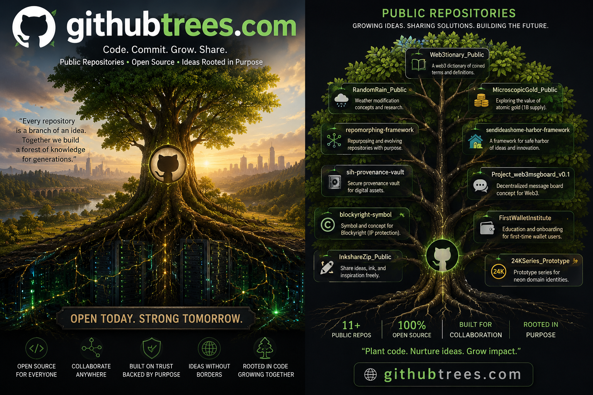

Every public repository begins as an idea. Some become projects. Some become tools. Others may simply be waiting for the right person to discover another possibility.
GitHub Trees is a growing collection of public concepts, experiments and frameworks shared for exploration, collaboration and innovation.
Browse. Think. Fork. Build.